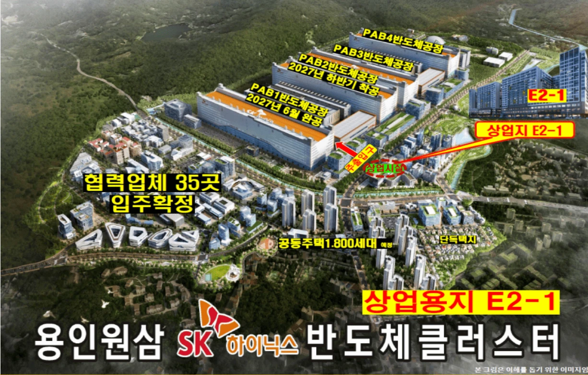
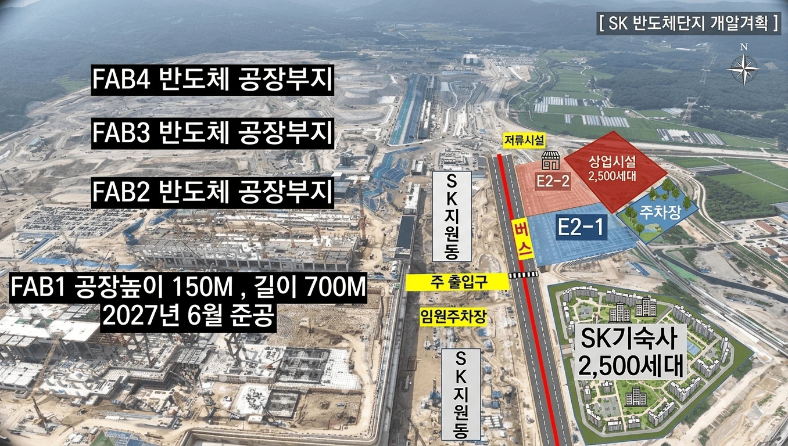
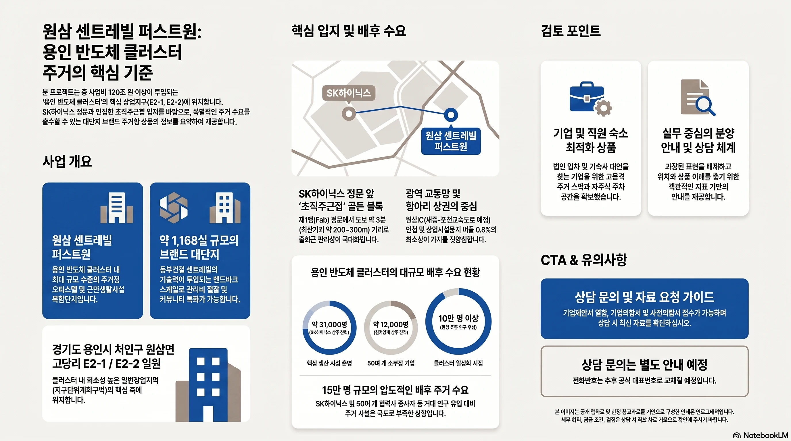

상담 유형을 선택해 주세요
일반 고객은 가격·잔여호실·청약일정 상담을, 기업 담당자는 기업숙소·임직원 체류·자료 검토 상담을 받을 수 있습니다.
반도체 메가클러스터 핵심 입지
용인 반도체클러스터, SK하이닉스, 삼성 시스템반도체 클러스터와의 광역 연계성을 함께 검토할 수 있도록 사업계획서 기반 위치 자료를 정리했습니다.

기업 검토 포인트
- 용인 반도체클러스터 배후 생활권을 검토할 수 있습니다.
- SK하이닉스 산업단지 조성 이슈와 인접 지원시설용지 위치를 함께 봅니다.
- 삼성 시스템반도체 클러스터와 광역 산업축 연계성을 참고할 수 있습니다.
- 이천-원삼-청주 반도체 벨트 내 기업숙소 검토자료로 활용할 수 있습니다.
- 기업숙소, 직원숙소, 법인숙소 수요 가능성을 확인하는 참고자료입니다.
- 직주근접 생활권과 산업단지 배후 상업·생활 인프라 형성 가능성이 있습니다.
반도체클러스터 안의 근린생활시설
오피스텔 2,320실과 산업단지 생활편의 수요를 함께 검토하는 상업시설입니다. 원삼 센트레빌 퍼스트원은 E2-1·E2-2 상업시설용지에 오피스텔과 근린생활시설이 함께 계획된 복합상품입니다.
상가 · 근린생활시설 검토
산업단지 배후 생활편의 기능과 연결되는 상업시설
근린생활시설은 지상 1층~3층에 배치되며, 산업단지 근무자·방문객·체류 인구의 식음, 편의, 생활지원, 업무지원 기능과 연결해 검토할 수 있습니다. 세부 업종, 공급 조건, 분양 조건은 상담 시 최신 자료 기준으로 확인이 필요합니다.
- 오피스텔 2,320실 배후 체류 수요 검토
- 산업단지 근무자·협력업체·방문객 생활편의 수요 검토
- 식음·편의·생활지원·업무지원 업종 검토 가능

약 2,515평 규모 검토
약 2,552평 규모 검토
E2-1·E2-2 합산 기준
사업계획서 비교자료 기준
근린생활시설 배치 검토
체류 인구 생활편의 수요 검토
※ 상업용지 비율, 호실 수, 면적은 사업계획서 발췌자료 기준 참고값이며 인허가 및 모집공고 확정 시 변경될 수 있습니다.
건축 · 설계 자료
사업 조감도, 위치도, 상업시설용지 자료를 원본 비율 중심으로 배치했습니다. 세부 도면과 인허가 사항은 사업계획서 및 관계기관 확인이 필요합니다.




산업단지 구조
사업계획서 배치도를 기반으로 SK하이닉스 FAB, 지원시설, E2-1·E2-2, 상업시설, 기업숙소 검토 구간의 관계를 이미지와 함께 정리했습니다.
SK하이닉스
FAB·산업시설
FAB·산업시설
E2-1·E2-2
지원시설용지
지원시설용지
상업시설
기업숙소
직원숙소
직주근접
지구단위계획
사업계획서 표를 기업 검토용 카드로 재구성했습니다. 인허가 사항은 관계기관 확인이 필요합니다.
세부 허용용도 확인 필요
최종 인허가 확인 필요
관계기관 확인 필요
사업계획서 기준 확인 필요
오피스텔 관련 검토사항 확인 필요
※ 사업계획서 기준이며 인허가 사항은 관계기관 확인이 필요합니다.
생활 인프라 참고자료
사업계획서 부록의 입점의향서를 기반으로 구성한 참고자료이며 실제 입점 여부는 변경될 수 있습니다.
입점의향서 기준 자료이며 향후 계약 및 운영 조건에 따라 변동 가능성이 있습니다. 산업단지 배후 생활 인프라 형성 가능성을 검토하는 참고자료로 활용할 수 있습니다.
입지·현장 이미지 자료
원삼 센트레빌 퍼스트원은 용인 반도체클러스터 상업시설용지 E2-1 · E2-2 블록 일대에 위치한 주거형 오피스텔 및 근린생활시설 검토 상품입니다.


보고서형 인포그래픽
기존 이미지 자료의 정보 구조를 유지하면서 제목, 표, 수치, 라벨을 실제 HTML 텍스트와 SVG 다이어그램으로 재구성했습니다. 확대 모달에서도 텍스트와 선이 선명하게 보이도록 설계했습니다.
프로젝트 핵심 데이터
원삼 센트레빌 퍼스트원 E2-1 BL 주요 검토 항목
| 대지 위치 | 용인시 처인구 원삼면 반도체클러스터 일반산업단지 E2-1 |
|---|---|
| 지역 / 지구 | 일반상업지역, 지구단위계획구역 |
| 대지 면적 | 6,961.00㎡ (2,105.70평) |
| 건축 규모 | 지하 7층 ~ 지상 15층 |
| 연면적 | 88,358.50㎡ (26,728.45평) |
| 공급 규모 | 오피스텔 1,160실 |
| 주차 대수 | 1,374대 |
1,160실
대규모 주거형 오피스텔
1,374대
100% 이상 주차 계획
E2-1
일반상업지 핵심 입지
세부 수치는 향후 변경될 수 있으며, 상담 시 최신 자료 기준으로 확인하시기 바랍니다.
용인 반도체 클러스터 현황
주요 반도체 클러스터 비교와 원삼 일반산단의 위치
기흥
남사·이동
원삼
경기용인 플랫폼시티
삼성전자 기흥캠퍼스
남사·이동 국가산단
원삼 반도체클러스터
용인 반도체 협력 일반산단
| 구분 | 국가산단 | 일반산단 | 연구단지 |
|---|---|---|---|
| 위치 | 이동읍·남사읍 | 원삼면 일원 | 기흥캠퍼스 부지 |
| 규모 | 약 235만평 | 약 126만평 | 약 37만평 |
| 사업비 | 360조원 | 600조원 | 20조원 |
| 주요시설 | 시스템반도체 Fab 6기 | 차세대 메모리 Fab 4기 | R&D FAB 3개동 |
추진 경과
- 삼성전자 국가산단: 시스템반도체 생산 거점으로 추진 중
- SK하이닉스 일반산단: 차세대 메모리 생산기지 조성 진행 중
- 연구·협력 인프라 확대로 용인 반도체 벨트 확장 중
600조원
총 투자 규모 예정
126만평
일반산단 규모
Fab 4기
차세대 메모리 팹 건설
상기 내용은 계획 단계로 사업 추진 과정에서 변경될 수 있습니다.
일반산업단지 개요
용인 반도체 클러스터 일반산업단지 핵심 정보
| 위치 | 용인시 처인구 원삼면 고당리·독성리·죽능리 일원 |
|---|---|
| 면적 | 약 4,155,996㎡ (약 126만평) |
| 사업기간 | 2019 ~ 2027 |
| 사업비 | 3조 8,045억원(민간개발) / SK하이닉스 약 600조원 |
| 고용창출 | 직·간접 고용효과 약 3만명 |
차세대 FAB 4기
R&D 연구센터
소부장 협력단지
상업/주거 지원시설
126만평
총 면적 약 4,155,996㎡
3만명
직·간접 고용효과
FAB 4기
차세대 FAB 구축 계획
상기 내용은 사업계획 및 인허가 과정에서 변경될 수 있습니다.
배후수요 및 상업지 입지
원삼 반도체 클러스터 내 E2-1 상업지의 위치와 배후 수요 개념
PAB1 반도체공장
PAB2 반도체공장
PAB3 반도체공장
PAB4 반도체공장
E2-1
상업지
상업지
공동주택 1,800세대 예정
협력업체 35곳
입주확정
입주확정
주출입구 인근
E2-1
상업지
35개
협력업체
1,800세대
공동주택 예정
상기 이미지는 이해를 돕기 위한 계획 이미지로, 향후 개발계획 및 인허가 과정에서 변경될 수 있습니다.
FAB·기숙사·E2-1 관계도
주출입구 동선과 상업시설용지 배치 개념
FAB4
반도체 공장부지 FAB3
반도체 공장부지 FAB2
반도체 공장부지 FAB1
반도체 공장부지
반도체 공장부지 FAB3
반도체 공장부지 FAB2
반도체 공장부지 FAB1
반도체 공장부지
SK
지원동
지원동
버스전용도로
추정선
추정선
주출입구
메인 게이트
메인 게이트
E2-1
일반산업지
일반산업지
SK 기숙사
2,500세대
2,500세대
Fab 4기
FAB1 ~ FAB4 단계적 구축
2,500세대
기숙사 배후 주거수요
주출입구 인접
접근성·가시성 검토
배치와 동선은 이해를 돕기 위한 참고용이며 실제 계획과 다를 수 있습니다.
전도 조건 및 접근성
Main Gateway 관점에서 본 E2-1 상업지 입지 해석
57국도
세종-포천 고속도로
남용인IC(원삼)
SITE
일반산업단지
SK 하이닉스 기숙사
Main Gateway
SK하이닉스 및 협력산업단지로의 진입 관문
- 기존 주출입구 동선상 위치
- 근로자·방문객이 거쳐가는 필수 동선
- 3면 도로에 접한 개방형 코너 입지
- 일반상업지역 핵심 입지
| 북측 | 33M 대로 | 메인 가시성 확보 |
|---|---|---|
| 동측·서측 | 29M 도로 | 차량 동선, 진출입 용이 |
| 남측·서측 | 19M 도로 | 보행자 접근성 검토 |
33M 대로
북측 메인 도로 접합
Main Gateway
근로자·방문객 통과 동선
3면 도로
개방형 코너 입지
상기 이미지는 이해를 돕기 위한 참고용으로 실제와 다를 수 있습니다.
입지 독점력 및 배후 수요 분석
전체 산업단지 면적 중 일반상업용지 비율과, 유입 예상 인구 대비 기숙사 공급 현황을 참고 데이터로 정리했습니다. 아래 수치는 검토를 돕기 위한 참고 자료이며, 정확한 수치는 공식 자료 확인이 필요합니다.
상업용지 비율 비교 (참고)
원삼 클러스터의 일반상업용지 비율은 사업계획서 발췌자료 기준 약 0.75%로, 인근 신도시 대비 낮은 편으로 검토됩니다. 비교 수치는 참고용이며 정확한 수치는 각 지구 공식 자료를 확인하시기 바랍니다.
배후 인구 대비 기숙사 공급 (참고)
반도체클러스터 가동 시 유입이 예상되는 인력 규모 대비, 원삼면 일대 신축 주거 공급은 부족한 것으로 검토됩니다. 유입 인구 및 공급 수치는 확인이 필요한 예상치입니다.
정문권 접근성
반도체클러스터 주요 출입 동선과의 연결성을 검토합니다.
직주근접 가능성
근무지와 숙소 간 이동 부담을 줄일 수 있는지 확인합니다.
생활 인프라
실거주자와 장기체류 인력이 이용할 편의시설을 함께 살핍니다.
운영 유연성
일반 분양 상담과 법인 임차, 순환 입주 등 기업 운영 방식을 함께 검토합니다.
임대수요 검토용 참고 시뮬레이션
대출 비율과 금리를 조정하면 참고용 자기자본 수익률을 확인할 수 있습니다. 실제 임대료, 대출조건, 세금, 관리비에 따라 결과가 달라질 수 있으며, 수익을 약속하지 않습니다.
기준값: 분양가 2억 2,500만 원(참고), 보증금 500만 원, 월 임대료 115만 원 (원삼면 인근 구축 원룸 시세 참고치). 실제 분양가·임대조건과 다를 수 있습니다.
실 투자금(자기자본)
9,000만 원
연간 대출 이자
608만 원
연간 임대료 수입
1,380만 원
참고 자기자본 수익률
8.6%
특화 설계 포인트
실거주자와 장기 체류 인력 모두에게 필요한 생활 편의를 검토합니다.
소형 특화 평면
1인 가구부터 2~3인 가구까지 수용 가능한 평면 구성으로 검토됩니다 (확인 필요).
100% 자주식 주차
기계식 주차 없이 1,370대 규모의 자주식 주차 환경으로 검토됩니다 (확인 필요).
수납 특화 설계
대형 팬트리, 드레스룸 등 수납 공간을 강화한 평면으로 검토됩니다 (확인 필요).
단지 내 생활 인프라
지상 1~3층 상업시설과 커뮤니티 시설로 이동 없는 생활권을 검토합니다 (확인 필요).
분양전략 · 검토 절차
계약이 아니라 검토가 먼저입니다. 아래 순서로 확인하실 수 있습니다.
자료 확인
홈페이지 내 자료 열람과 인텔리전스 리포트로 입지·수요 데이터를 먼저 확인합니다.
상담 또는 자료요청
일반고객은 전화 상담으로, 기업고객은 기업의향서·기업자료 요청으로 세부 조건을 확인합니다.
현장·모델하우스 방문
상담 후 현장 및 모델하우스 방문 일정을 개별 안내합니다.
홍보자료
모든 자료는 다운로드가 아닌 홈페이지 내 열람 방식으로 제공됩니다.
광고 영상
원삼 센트레빌 퍼스트원 1차 광고 영상입니다.
인포그래픽
입지와 주거 수요 검토 포인트를 요약한 이미지 자료입니다.

클릭해서 크게 보기
팟캐스트
검토 내용을 오디오로 확인할 수 있는 참고자료입니다.
유의사항
본 페이지의 정보는 상담 및 자료 안내를 위한 참고 정보입니다.
분양가, 잔여호실, 계약조건, 입주시점 등은 변동될 수 있으므로 상담 시 최신 자료 기준으로 확인해 주시기 바랍니다.
본 페이지는 수익이나 가치 상승을 약속하지 않습니다.